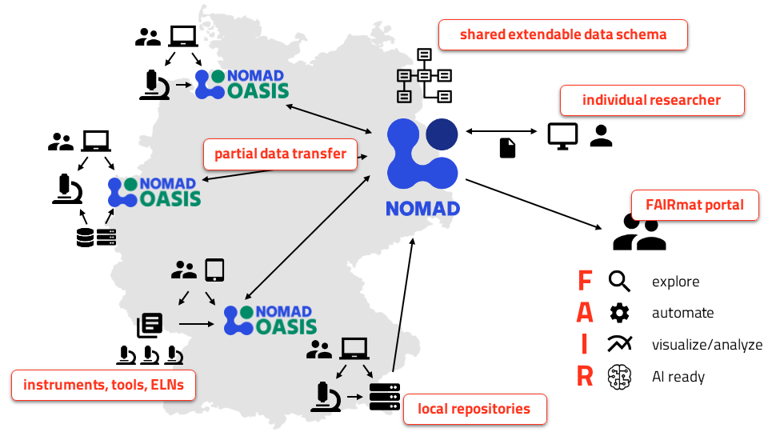

FAIRmat
develops NOMAD, and enables the community to build a network of interconnected
NOMAD Oases towards building its federated data infrastructure.


NOMAD allows you to share your data or use extensive data provided by others.
NOMAD Oasis balances the use of local resources, customizable services, and data privacy on the one hand with ready-made tools and data sharing on the other.
